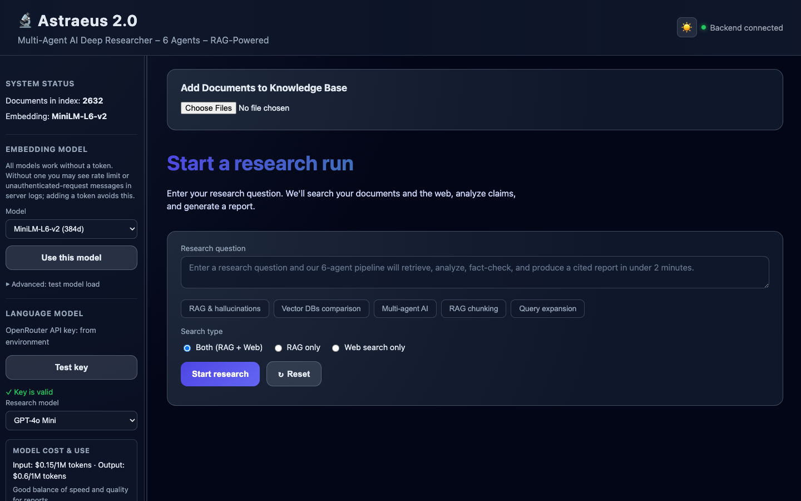

Live on AWS EC2
🔬 Astraeus 2.0
6 Agents · RAG-Powered · Autonomous Research Pipeline
API health: /api/health
6-Agent Pipeline
A research query flows through six specialized agents — query expansion, retrieval, analysis, fact-checking, insights, and report generation.
1Coordinator
→
2Retriever
→
3Critical Analysis
→
4Fact-Checker
→
5Insight Generator
→
6Report Builder
How It Works
- Enter a research question and optionally upload documents (.txt, .pdf, .docx) to index into a local vector store.
- The coordinator expands your query; the retriever searches the vector DB and optional Tavily web results.
- Agents extract claims, fact-check sources, synthesize insights, and produce a cited markdown report.
- Explore results in the React UI (Summary + Sources visualizations) or the legacy Streamlit interface.
Tech Stack
Python
FastAPI
React
Streamlit
sentence-transformers
OpenRouter
Tavily
Docker
AWS EC2
Screenshots
